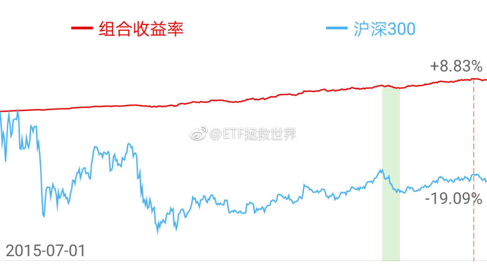

未来计划的轨迹是这样的:
熊市收集便宜筹码。争取在最黑暗的时候拿到足够的筹码，同时不亏损。如果无法避免亏损，尽量将亏损维持在15%以内。
然后在牛市中资产飞跃，收割。
继续新一轮收集筹码。
所以在每轮熊市底部，收益率注定不会好看。我无法想象熊市底部做到不亏损的同时收益率高还能拿到足够筹码。买股票可能买到逆势牛股，买指数基金不可能。
就这么简单。真要讨论收益率，一轮牛熊之后再来说吧。
熊市收集便宜筹码。争取在最黑暗的时候拿到足够的筹码，同时不亏损。如果无法避免亏损，尽量将亏损维持在15%以内。
然后在牛市中资产飞跃，收割。
继续新一轮收集筹码。
所以在每轮熊市底部，收益率注定不会好看。我无法想象熊市底部做到不亏损的同时收益率高还能拿到足够筹码。买股票可能买到逆势牛股，买指数基金不可能。
就这么简单。真要讨论收益率，一轮牛熊之后再来说吧。
- 